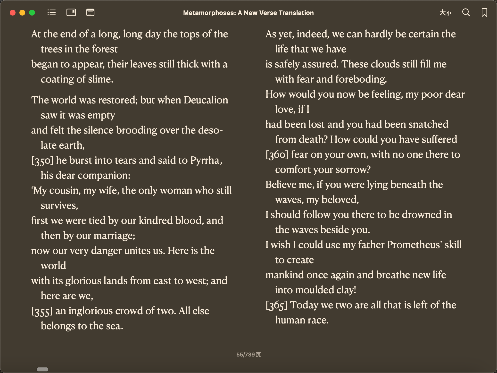

Template
Table of Contents
Org mode is for keeping notes1, maintaining TODO lists, planning projects, and authoring documents with a fast and effective system2.
1. 测试内容1
普肖尔河已经展开在我们旅人的眼前；远处荡漾着寒意，那是在难受的殚精竭神的酷热之后更加容易令人感受到的。穿过疏落地耸立在草原上的黑杨树、白桦树和白杨树的明明暗暗的绿叶，闪烁着带着冷气的火焰般的闪光，美丽的河水辉煌地袒露出银色的胸膛，群树的绿色鬈发茂密地垂拂在上面。这条河像是一个任性的女孩子，在那销魂荡魄的一刻，当忠实的镜子嫉妒地映出她充满着骄傲和耀眼的光彩的前额，百合花一样的双肩，披覆着暗沉的亚麻色发浪的大理石一样的脖颈的时候，当她没完没了地耍脾气，除掉一些装饰，又换上另外一些装饰的时候；——她几乎每年都要改变环境，选取新的河道，在周围点缀着各式各样新的景色。一排排的水车用笨重的轮子掬起广阔的水浪，猛烈地抛掷开去，溅出水花，撒成轻雾。
1.1. 次级标题
普肖尔河已经展开在我们旅人的眼前；远处荡漾着寒意，那是在难受的殚精竭神的酷热之后更加容易令人感受到的。穿过疏落地耸立在草原上的黑杨树、白桦树和白杨树的明明暗暗的绿叶，闪烁着带着冷气的火焰般的闪光，美丽的河水辉煌地袒露出银色的胸膛，群树的绿色鬈发茂密地垂拂在上面。这条河像是一个任性的女孩子，在那销魂荡魄的一刻，当忠实的镜子嫉妒地映出她充满着骄傲和耀眼的光彩的前额，百合花一样的双肩，披覆着暗沉的亚麻色发浪的大理石一样的脖颈的时候，当她没完没了地耍脾气，除掉一些装饰，又换上另外一些装饰的时候；——她几乎每年都要改变环境，选取新的河道，在周围点缀着各式各样新的景色。一排排的水车用笨重的轮子掬起广阔的水浪，猛烈地抛掷开去，溅出水花，撒成轻雾。
1.1.1. 下级标题
Here’s the thing, though: Matt gets a lot of stuff done. He gets it done well and is generally happy doing it. The things he writes about in this book will help you get stuff done, too. He is going to teach you how to make manageable changes so that you can achieve the things you would love to make happen, and he’ll show you how to do it without upending your life.[1]
There is no doubt Matt is a hard worker. If you want to be productive and accomplish your goals, it’s a given that you will have to work hard. However, you do not need to sacrifice your family time, your fun time, or your health to do it. Matt is going to show you how to maximize the time that you have and get the most out of it.

Figure 1: This is the caption for the next figure link (or table)
2. 公式
\(E = mc^2\) 是爱因斯坦著名的公式
\begin{equation} \label{1} F(s) = \int_{0-}^{ \infty } f(t) e^{-st} dt \end{equation}3. 代码块
print("Hello World")
4. Tikz图片

Figure 2: This is the caption for the circuit.
5. References
Footnotes:
For note keeping, Deft with Org mode make a cute couple. Pick a few popular papers and grind through the ambiguity. For my first handful of papers in a new area, I go line-by-line and search up all the unfamiliar terms to build that missing context. Once you’re past the initial slog, you can start applying the rest of the post (sampling, skimming, streamlining your approach). But I do think the first few should be deliberately hard and long.
A great article elaborates on this.